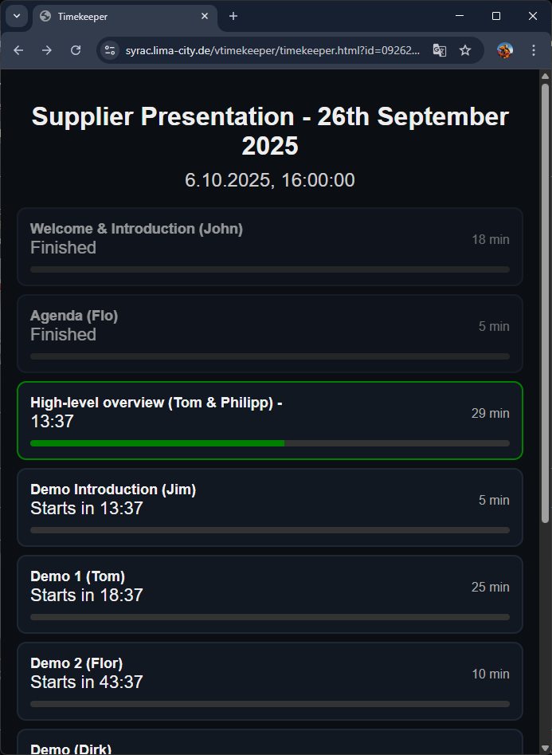

Overview
VTimekeeper is a simple, shared countdown tool designed for meetings, events, and presentations. Multiple participants can open the same agenda link and watch the timers run in sync.
Example Agenda View

How to Use
- Go to Admin Page:
https://syrac.lima-city.de/vtimekeeper/admin.html?new=1 - Fill in Title and Start Time (UTC)
- Add Slots (Title + Duration)
- Click 💾 Save Changes
- A popup will show:
- 👀 View Link – share with viewers
- ✏️ Admin Link – edit later
Tips
- All times are in UTC – adjust for your timezone
- Agendas sync automatically for all viewers
- Keep your Admin Link private
- Create new agendas for different sessions